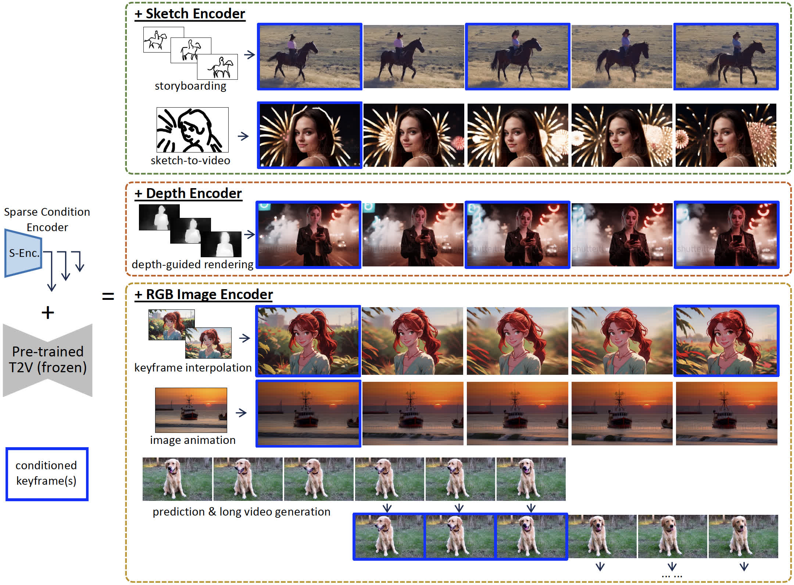

SparseCtrl: Adding Sparse Controls to Text-to-Video Diffusion Models
[arXiv Report] [Code (comming soon)] [BibTeX]

[arXiv Report] [Code (comming soon)] [BibTeX]
Abstract
The development of text-to-video (T2V), i.e., generating videos with a given text prompt, has been significantly advanced in recent years. However, relying solely on text prompts often results in ambiguous frame composition due to spatial uncertainty. The research community thus leverages the dense structure signals, e.g., per-frame depth/edge sequences to enhance controllability, whose collection accordingly increases the burden of inference. In this work, we present SparseCtrl to enable flexible structure control with temporally sparse signals, requiring only one or few inputs. It incorporates an additional condition encoder to process these sparse signals while leaving the pre-trained T2V model untouched. The proposed approach is compatible with various modalities, including sketches, depth, and RGB images, providing more practical control for video generation and promoting applications such as storyboarding, depth rendering, keyframe animation, and interpolation. Extensive experiments demonstrate the generalization of SparseCtrl on both original and personalized T2V generators.
Overview Video
Supplement
Here we show results using the same prompt with the same model, demonstrating that our method dose not break the diversity of the original model. Click to play the following animations.
BibTeX
Project page template is borrowed from DreamBooth.